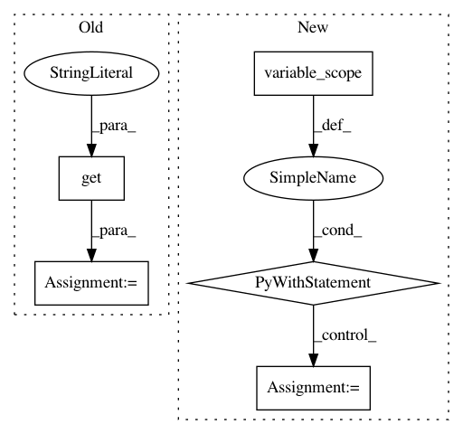

963710e3d38c9ad1d8b8cc1419a3bd1b3dddde1f,opennmt/utils/optim.py,,optimize,#Any#Any#Any#,90
Before Change
decay_fn = None
learning_rate = float(params["learning_rate"])
clip_gradients = params.get("clip_gradients")
if clip_gradients is not None:
clip_gradients = float(clip_gradients)
optimizer_class = get_optimizer_class(params["optimizer"])
After Change
loss += regularization_penalty(regularization["type"], regularization["scale"])
global_step = tf.train.get_or_create_global_step()
with tf.variable_scope("optim"):
// Learning rate.
learning_rate = tf.get_variable(
"learning_rate",
[],
trainable=False,
initializer=tf.constant_initializer(float(params["learning_rate"])))
if "decay_type" in params:
decay_fn = learning_rate_decay_fn(
params["decay_type"],
params["decay_rate"],
params["decay_steps"],
decay_step_duration=params.get("decay_step_duration", 1),
staircase=params.get("staircase", True),
start_decay_steps=params.get("start_decay_steps", 0),
minimum_learning_rate=params.get("minimum_learning_rate", 0))
learning_rate = decay_fn(learning_rate, global_step)
tf.summary.scalar("learning_rate", learning_rate)
// Optimizer.
optimizer_class = get_optimizer_class(params["optimizer"])
optimizer_params = params.get("optimizer_params", {})
if optimizer_class.__name__ == "AdafactorOptimizer":
optimizer = optimizers.get_adafactor_optimizer_from_params(
optimizer_class, optimizer_params, learning_rate=learning_rate)
else:
optimizer = optimizer_class(learning_rate, **optimizer_params)
if mixed_precision:
optimizer = optimizers.MixedPrecisionOptimizerWrapper(
optimizer, loss_scale=get_loss_scale_from_params(params))
// Gradients.
gradients = optimizer.compute_gradients(loss, colocate_gradients_with_ops=True)
_summarize_gradients_norm("global_norm/gradient_norm", gradients)
if "clip_gradients" in params:
gradients = _clip_gradients_by_norm(gradients, float(params["clip_gradients"]))
_summarize_gradients_norm("global_norm/clipped_gradient_norm", gradients)
return optimizer.apply_gradients(gradients, global_step=global_step)
def regularization_penalty(regularization_type, scale, weights_list=None):
Computes the weights regularization penalty.
Args:
In pattern: SUPERPATTERN
Frequency: 3
Non-data size: 5
Instances
Project Name: OpenNMT/OpenNMT-tf
Commit Name: 963710e3d38c9ad1d8b8cc1419a3bd1b3dddde1f
Time: 2018-11-09
Author: guillaumekln@users.noreply.github.com
File Name: opennmt/utils/optim.py
Class Name:
Method Name: optimize
Project Name: analysiscenter/batchflow
Commit Name: 11c6bf1dbd051d087519ff771b39dac600c0d96d
Time: 2019-07-29
Author: 7520522+a-arefina@users.noreply.github.com
File Name: batchflow/models/tf/encoder_decoder.py
Class Name: EncoderDecoder
Method Name: head
Project Name: dpressel/mead-baseline
Commit Name: 08a31864a8e7a633546790d8fed54455b914d96b
Time: 2019-06-18
Author: dpressel@gmail.com
File Name: python/baseline/pytorch/embeddings.py
Class Name: CharConvEmbeddings
Method Name: __init__